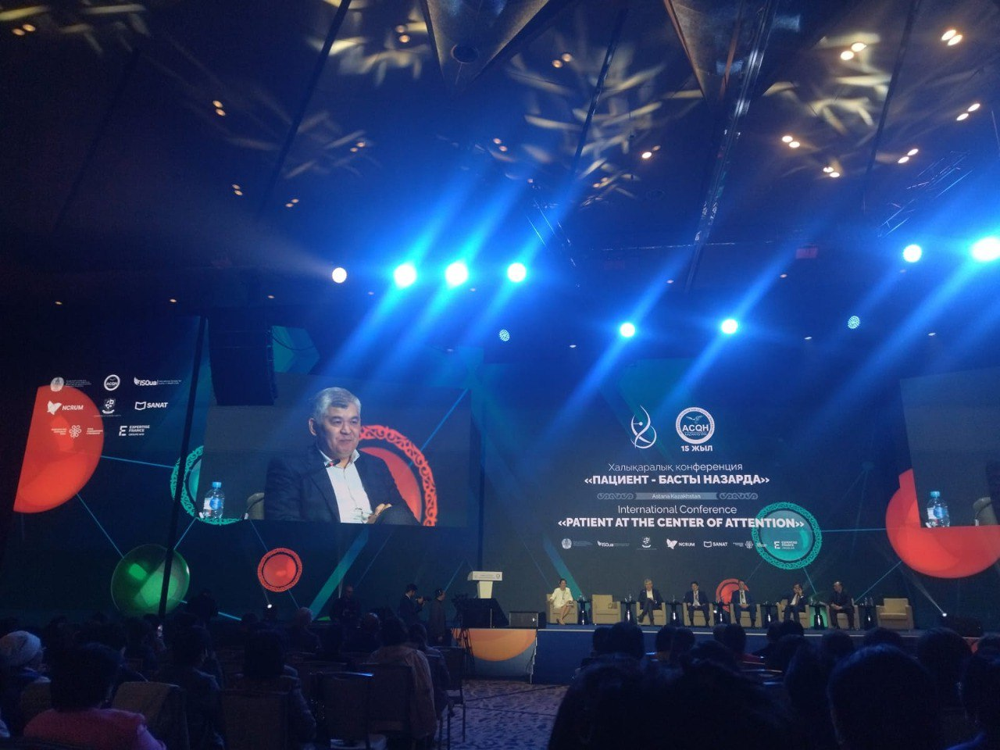

17 сентября 2024
Именно под таким названием сегодня в Астане проходит международная конференция по аккредитации и качеству медицинской помощи «Пациент в центре внимания: стимулы на пути к качеству и безопасности», проводимой ОО «Accreditation centеr for quality in healthcare» совместно с НАО «ФСМС».
Конференция приурочена Всемирному дню безопасности пациентов. Соответственно в течение двух дней отечественные мэтры, международные эксперты ВОЗ, а также США, Ирландии, Сербии, Узбекистана, РФ проведут несколько сессий и мастер классов, круглые столы на которых будут обсуждать вопросы качества оказываемой медицинской помощи и безопасности пациента в разных аспектах.
Отрадно отметить, что на этой крайне важной конференции принимают участие и наши коллеги – руководитель службы контроля качества медицинских услуг и безопасности пациентов Бакытгуль Жумашова, риск менеджер службы внутреннего аудита Мадина Альжапарова и медицинская сестра службы контроля качества медицинских услуг и безопасности пациентов Дана Мамиева.
А мы же напомним, что Всемирный день безопасности пациентов служит поводом повысить осведомленность населения и укрепить сотрудничество между пациентами, медицинскими работниками, политиками и лидерами здравоохранения в интересах повышения безопасности получателей медицинской помощи.
Кампания этого года названа «Улучшение диагностики для безопасности пациентов» и проходит под лозунгом «Не допускайте ошибок, помните о безопасности!», напоминающем о крайней важности правильной и своевременной постановки диагноза для защиты пациентов и улучшения исходов заболевания.
Мы же со своей стороны хотим заверить, что стремимся и прикладываем все усилия, чтобы качество специализированной медицинской помощи нашим пациентам было всегда на высшем уровне, а их безопасность на первом месте!
#шқофпо #вкофпц #ШҚОфтизиопульмонологиялықорталығы #вкофтизиопульмонологическийцентр #вко #бізтуберкулездіжеңеаламыз #мыможемпобедитьтуберекулез #стоптуберкулез #stoptb #всемирныйденьбезопасностипациента #международнаяконференцияпациентвцентревнимания #безопасностьпациента #качествомедицинскойпомощи